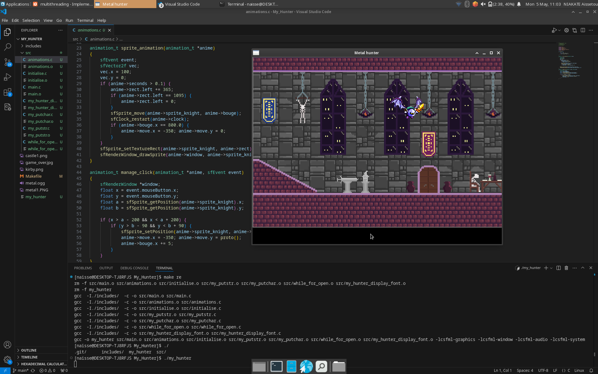
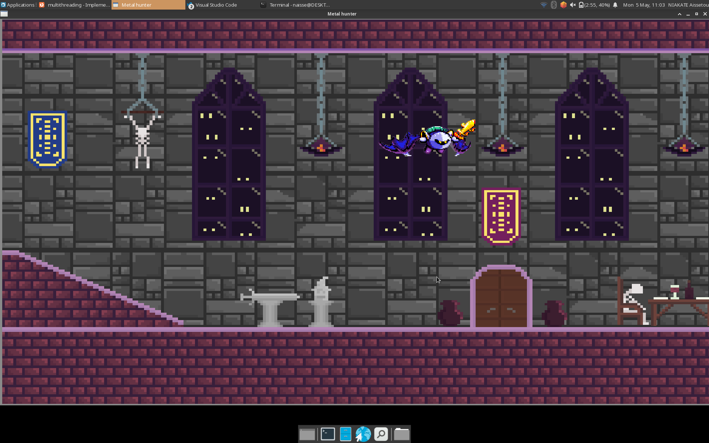
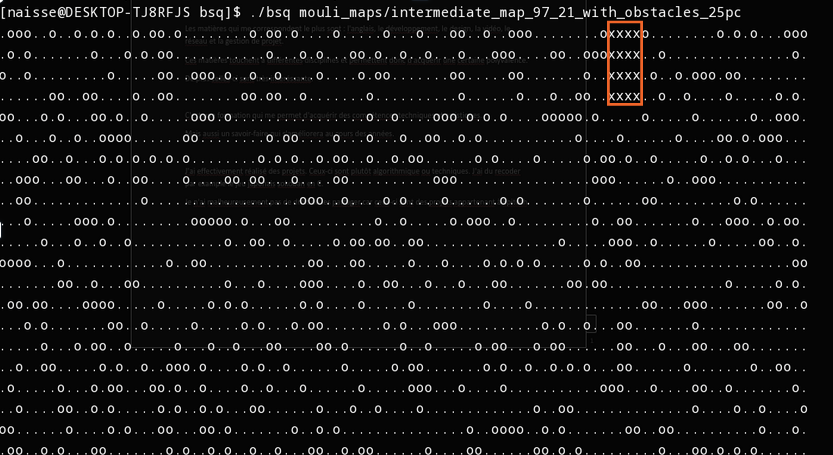
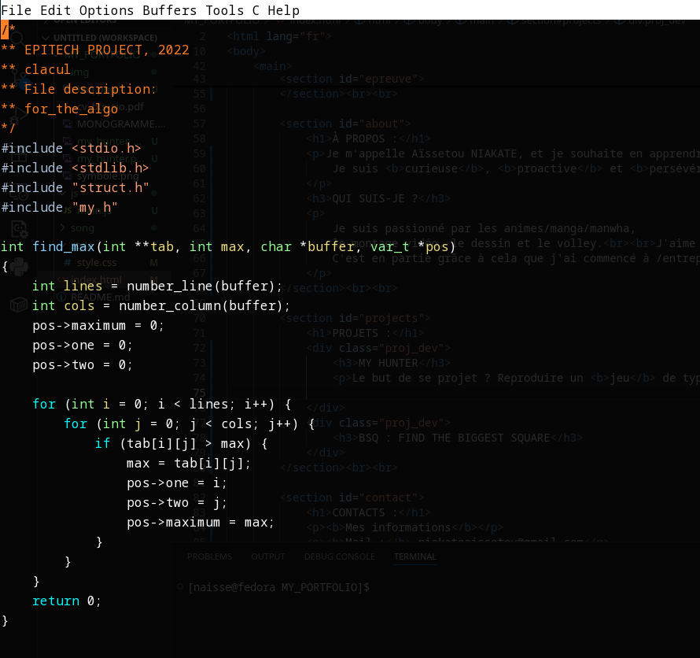

ÉPREUVE ORALE E5 :
Étant actuellement étudiante en BTS SIO, je dois réaliser un oral, l'épreuve E5. Cette épreuve consiste à évaluer mes compétences professionnelles
acquises durant ma formation, mes stages et mes projets.
Elle dure environ quarante minutes et se déroule en deux grandes parties.
Dans un premier temps, je présente mon parcours, mon rôle en entreprise et les différentes missions que j'ai pu effectuer.
Ensuite, je dois détailler deux réalisations professionnelles que j'ai choisies, en expliquant le contexte, les objectifs, les outils utilisés et les compétences mobilisées.
Le jury me pose ensuite des questions pour vérifier ma compréhension des situations professionnelles,
mes choix techniques et ma capacité à m'adapter aux besoins d'une organisation.
L'objectif de cette épreuve est de montrer que je suis capable d'analyser un besoin,
de proposer et mettre en œuvre une solution informatique, et de communiquer efficacement sur mon travail.
À PROPOS :
Je m'appelle Aïssetou NIAKATE, et je souhaite en apprendre plus sur l'informatique. Je suis curieuse, proactive et persévérante ce qui me pousse à entreprendre continuellement de nouveaux projets, notamment en autodidacte.
QUI SUIS-JE ?
Je suis passionné par les animes/manga/manwha,
le montage vidéo, le dessin et le volley.
J'aime découvrir de nouvelles choses et ma nature me motive à entreprendre continuellement de nouveaux projets.
C'est en partie grâce à cela que j'ai commencé à entreprendre de manière autodidacte de nouveaux projets de programmation ainsi que apprendre des outils comme la suite Adobe.
PROJETS :
MY HUNTER ⌖
Le but de ce projet ? Reproduire un jeu de type Duck Hunter en C à l'aide de la CSFML
 BSQ : FIND THE BIGGEST SQUARE ☐
Dans ce projet, il fallait trouver le plus grand carré dans une map donnée, pour cela, j'ai utilisé l'algorithme du démineur inversé.
 Pour voir plus de projets et de détail, consultez mon CV !
CONTACTS :
Mes informations
Mail : niakateaissetou@gmail.com
Téléphone : 07.68.88.99.77
Me joindre :